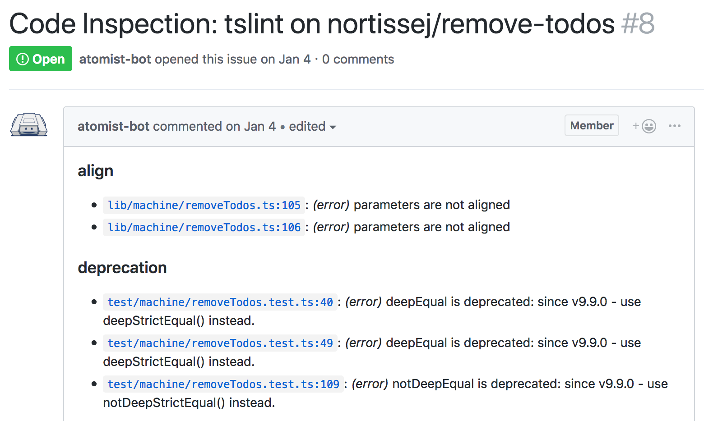

Code Inspections
Evaluate all your code according to your own standards. Code inspections let you locate problems and measure how closely standards are followed. Run them on one repository or all repositories. Run them after every commit, so that developers are notified of the status of the code whenever they work in a repository.
For instance, when I make a commit to docs-sdm, a code inspection creates a GitHub issue for all the tslint violations in the branch. That issue looks like this:

Code inspections can instead send messages to Slack. They can block further progress in goals, so you can prevent deploy of noncompliant code. They can also require specific approval before proceeding with other goals.
Prerequisite: First, you’ll need an AutoCodeInspection goal.
Installing an inspection from a pack
You can find inspections in packs, and register them on your AutoCodeInspection goal.
Find inspections related to:
Custom inspections
An inspection looks at a repository and produces some report. It is
implemented as a function from Project to an inspection result, plus a
separate function to react to these results. You decide what an
inspection result contains, how to populate it, and how to react to
them.
This page shows you how to:
- Create your inspection
- Create a command to run it on demand in any project or projects
- Add it as an automatic inspection to every commit.
Declare a result type
Start by deciding what your inspection wants to say about a repository. For instance, your inspection might look for files with too many lines. Your result might contain the paths of files that have too many lines in them. Here, the type is defined as a string array.
type FilesWithTooManyLines = string[];
Create an inspection function
The CodeInspection is a function from a project (and optionally,
inspection parameters) to an inspection result. Your inspection can call functions on the Project to determine
the result.
For instance, this one gathers all the file paths where the content is over 1000 lines:
import { NoParameters, Project, projectUtils, } from "@atomist/automation-client"; const InspectFileLengths: CodeInspection<FilesWithTooManyLines, NoParameters> = async (p: Project) => { // this sample code returns the paths to TypeScript files with over 1000 lines const longFiles = await projectUtils.gatherFromFiles(p, "**/*.ts", async f => { const c = await f.getContent(); const lineCount = c.split("\n").length; if (lineCount > 1000) { return f.path; } else { return undefined; } }); return longFiles.filter(path => path !== undefined); };
See also: projectUtils
Create a function to react to this result
Usually when you run a code inspection, you want to report back to yourself or your team what the results were. Since your inspection returns a custom type, you have to define what to do with it.
We need a function that reacts to the inspection results. It takes as input an array of CodeInspectionResult which includes information about the repository that was inspected and the results of the inspection.
For instance, the following reaction function sends a message containing the identifying information of the project and a summary of the results:
import { CodeInspectionResult, CommandListenerInvocation, } from "@atomist/sdm"; async function sendFilesWithTooManyLinesMessage( results: Array<CodeInspectionResult<FilesWithTooManyLines>>, inv: CommandListenerInvocation) { const message = results.map(r => `${r.repoId.owner}/${r.repoId.repo} There are ${r.result.length} files with too many lines`) .join("\n"); return inv.addressChannels(message); }
Create a command to run the inspection and react to it
Combine the inspection and the reaction into an object, a command
registration. The intent is what you’ll type to get Atomist to run
the inspection.
import { NoParameters } from "@atomist/autiomation-client"; import { CodeInspectionRegistration } from "@atomist/sdm"; const InspectFileLengthsCommand: CodeInspectionRegistration<FilesWithTooManyLines, NoParameters> = { name: "InspectFileLengths", description: "Files should be under 1000 lines", intent: "inspect file lengths", inspection: InspectFileLengths, onInspectionResults: sendFilesWithTooManyLinesMessage, };
Register the command on your SDM
Finally, teach the SDM about your command. In machine.ts, or
wherever you configure your SDM, add
sdm.addCodeInspectionCommand(InspectFileLengthsCommand);
Run the inspection
Recompile and restart your SDM. Depending on the context where you run
@atomist inspect file lengths, you’ll receive a response for one or
many projects.
For local mode: run it within a repository directory to inspect one project, or one directory up (within an owner directory) to inspect all repositories under that owner, or anywhere else to inspect all repositories.
For team mode, in Slack: address Atomist in a channel linked to a
repository to inspect that repository: @atomist inspect file
lengths. Or, specify a regular expression of repository names to
check them all: @atomist inspect file lengths targets.repos=".*".
Automatically run your code inspection
You may use your inspection to find places in the code that need to change, and then change them. But how will you know when the file lengths creep back up?
Make an auto code inspection run on every push (or in local mode, on every commit). Then you can point out when a file has reached 1000 lines. You can point this out with a message, by creating an issue, by failing the goal, or by asking people to push a button to approve the unorthodox file length.
Make your inspection return a review
Rather than returning the arbitrary type FilesWithTooManyLines, we
first convert our inspection to return a ProjectReview, which
packages information about the project being inspected with the
comments from the inspection.
import { NoParameters, Project, ProjectReview, projectUtils, ReviewComment, } from "@atomist/automation-client"; const InspectFileLengths: CodeInspection<ProjectReview, NoParameters> = async (p: Project) => { const longFiles = await projectUtils.gatherFromFiles(p, "**/*.ts", async f => { const c = await f.getContent(); const lineCount = c.split("\n").length; if (lineCount > 1000) { return f.path; } else { return undefined; } }).filter(path => path !== undefined); const comments: ReviewComment[] = longFiles.map(f => ({ severity: "warn", detail: "File has more than 1000 lines", category: "file", subcategory: "file-length", sourceLocation: { path: f }, })); return { repoId: p.id, comments }; };
Decide what should happen
What qualifies as a failed inspection and what should happen when an inspection fails?
Decide this in a function that listens for your code inspection
results and returns a PushImpactResponse: proceed, failGoals, or
requireApprovalToProceed.
You also get access to an invocation object, in case you want to post
a message as well. Let’s use that to send the message from this
function and no longer use the now out-of-date
sendFilesWithTooManyLinesMessage function.
import { ReviewListener } from "@atomist/sdm"; const failGoalsIfCommentsReviewListener: ReviewListener = async rli => { if (rli.review.comments && rli.review.comments.length > 0) { await rli.addressChannels("The following files have more than 1000 lines:\n" + rli.review.comments.map(c => c.sourceLocation.path).join("\n")); return PushImpactResponse.failGoals; } return PushImpactResponse.proceed; };
There are some handy ReviewListeners available:
slackReviewListenerRegistrationsends messages to Slack about the review. By default, the goal proceeeds after sending the message. To change this, send{ pushReactionResponse: PushImpactResponse.failGoals }(for instance) in its options.singleIssueManagingReviewListenerand friends create GitHub issues per category or per branch. You’ll need the sdm-pack-issue extension pack.
Update the registrations
Update the registration to reflect the new return type,
ProjectReview, and remove the onInspectionResults property.
import { NoParameters, ProjectReview, } from "@atomist/automation-client"; import { CodeInspectionRegistration } from "@atomist/sdm"; const InspectFileLengthsCommand: CodeInspectionRegistration<ProjectReview, NoParameters> = { name: "InspectFileLengths", description: "Files should be under 1000 lines", intent: "inspect file lengths", inspection: InspectFileLengths, };
Also create a registration for the review listener:
import { ReviewListenerRegistration } from "@atomist/sdm"; const FailGoalsIfComments: ReviewListenerRegistration = { name: "Fail Goals if any code inspections result in comments", listener: failGoalsIfCommentsReviewListener, };
AutoInspect goal
Finally, attach this code inspection and its listener to your AutoCodeInspection goal:
import { AutoCodeInspection } from "@atomist/sdm"; const codeInspection = new AutoCodeInspection(); codeInspection.with(AutoInspectFileLengths) .withListener(FailGoalsIfComments);
Activate your AutoCodeInspection by setting the goal when a push happens. See AutoInspect goal for details.